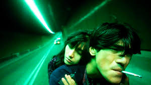
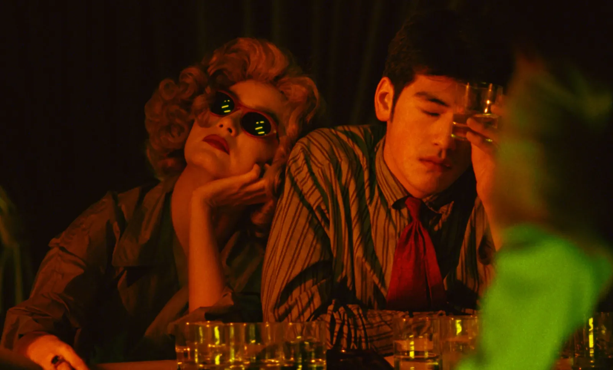
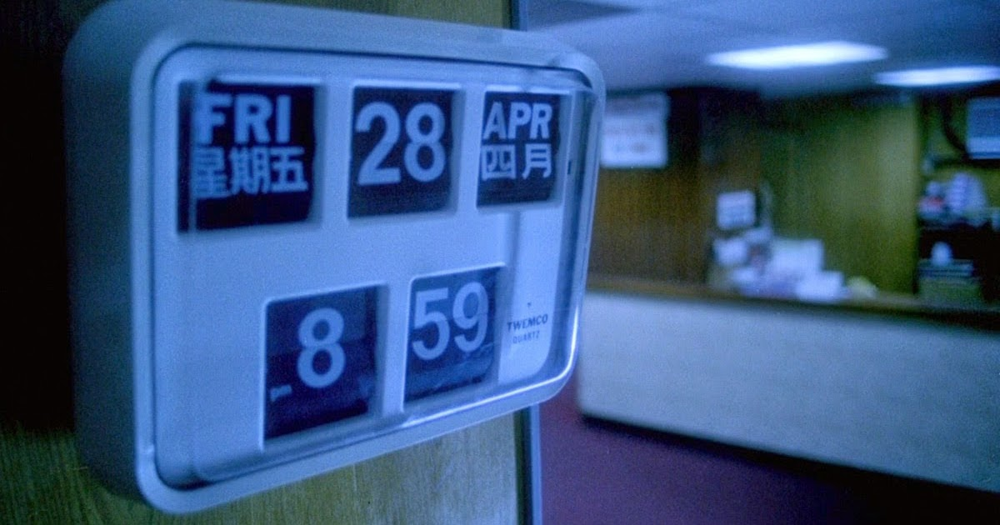
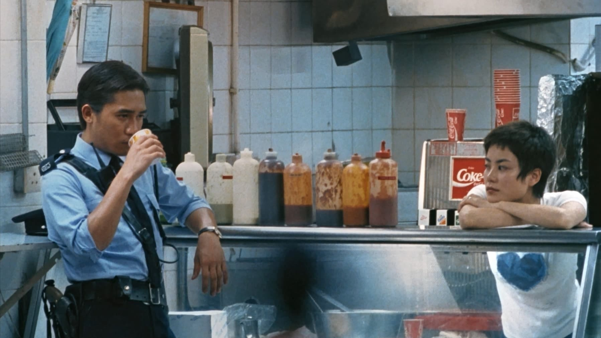
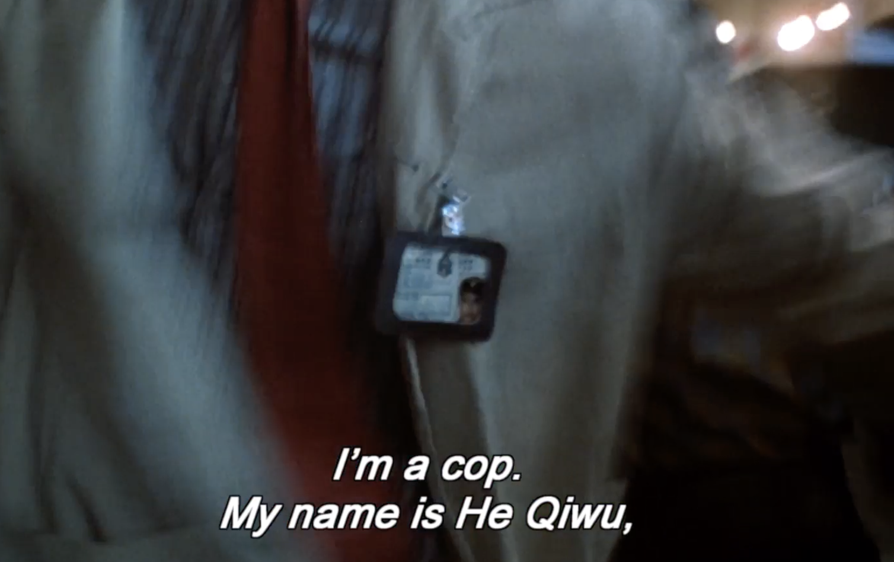

Time

tldr? so jump
music⌗
recently i have developed a fondness for jazz, it somehow makes me dance and feel superior. other than that my music taste has taken a very wide curve from indie rock to alt rock to raw rock, now im stuck with april rain, white moth black butterfly(thanks chuckky xp). seriously go listen to them, you’ll appreciate each instrument being played in their and the harmony they meddle into.
which film this time?⌗
this summers i took a course on ‘introduction to chinese cinema’ by Prof. Ritwij Bhowmik here at IITK. i have been analysing films from story, basic cinematography and a cinematic audience perspective. if you feel something different from usual in this review than others all thanks to him(and yea this is not a propoganda, i genuinely appreciate him and want to share how to appreciate the artistic expression in films)
there’s this wong kar wai collection always popping up on my mubi feed from a long time and yea the thumbnails were really catchy for instance ‘FALLEN ANGELS’ RAHHHHHH.
 i really meant to give them a watch & im glad i waited after watching farewell my concubine and yiyi in ART707 classes, i experienced some sort of level up in film watching capabilities. YiYi directed by Edward Yang is a film which truly reflects what an art film means at first i didn’t knew what to expect when it came to cinematography and his unique style and approach when we started the film. this ain’t a film that you’re going to watch once and be done with it. i for sure will be dwelling on it and its story for a long time, digesting what it means and reflect it with my own life, and returning to rewatch the movie again and again. it’s totally worth it. but yea this time it’s not yiyi which im gonna rant about. it’s chungking express.
on the side note watch ‘Perfect Days’ it’s about Hirayama who’s he you may ask, he lives a beautiful life, spending his days balancing his job as a caretaker of tokyo’s public toilets with his passion for music, literature, and photography. his structured routine(inspired me to fix my sleep schedule lol) is slowly interrupted by unexpected encounters that force him to reconnect with his past.
Chung hing sam lam (Chungking Jungle, 1994)⌗

For you to appreciate i have attached some shots from the film.
(suggestion - read this while listening to California Dreamin’ by The Mamas & the Papas) not gonna lie when i first saw wong kar wai’s photo i thought yess this is the guy who makes classic triad or gangster movies. although i was not wrong but what i saw truly tickled my brain. after watching chungking express i was not sure i can capture wong kar wai’s style and his artistic essence so i watched ‘in the mood for love’, ‘fallen angels’ & ‘2046’ too, so i can express my feelings about chungking express somewhat from the director’s perspective.
first of all one interesting fact the film was made in three months only, start to finish & has a wacky spontaneity that is unique in his oeuvre. the film can be divided in two parts he first half is a whiff to the gangster thriller, the second is pure electric romance. the narrative comprises two seperate and distinctive stories as they have their own characters and locations although each section of focuses on some lovesick cop who yearns for their ex-girlfriends until another woman captures their attention. the first part you’ll experience a warren of flophouses, cut-rate shops, and dubious import-export ventures. this haven for criminals and the destitute from all corners of the globe proves to be a dead end for Wong who abandons down few minutes in pursuit of a more captivating romantic prospect.
the pineapple cans⌗
cop no. 223 our first protagonist who has been dumped by his girlfriend May on april Fool’s Day. he refuses to believe it, and, so, he buys a can of pineapple every day for the month because it’s her favorite thing to eat & specifically hunts down the perfect can,ones that expire exactly on May 1st. the pineapple cans and their impending expiration date take on a dreamlike quality, the overly sweet canned pineapple mirrors the cloying nature of his puppy love and as May 1 nears, he unsuccessfully attempts to feed the pineapple syrup to his dog, symbolizing May’s lack of interest in his affections and ofc that obsession with eating expiry food does no good to anyone, the emotional pain turn to his physical discomfort, by vomiting he purges the past and instantly becomes infatuated with the next woman he encounters. while reading about it online i found something very interesting and which fits with this so much, wong kar wai was born in china but is a hong kong citizen. the film was released in 1994 just 3 years away from the handover of HK to china, the expiration date was a front for a deeper political meaning that is freedom that has an expiration date in the near future. this is what i love about movies from china, taiwan and HK that they always play with their political expressions and convey it very artistically. similarly when the blonde wigged girl was slipped the sardines dated may 1 she gets the message that time is running out for her, if she doesn’t deliver the drugs that her two-timing couriers have stolen, she will die same thing the expiration date, very beautiful depiction.
the CDs revolving in the bar are so satisfying to watch. our cop and that blonde wigged literally collide into each other in the opening chase sequence and naturally our cop falls in love with a drug smuggler at a bar. she’s wearing a blonde wig, sunglasses that completely cover her face, and a beige trench-coat. we fall into the antics of their story, and then the part ends at a take-out restaurant(midnight express) around which the action of the second part revolves. its the place where our cop goes to call is his answering machine, he has a very nice password - ’love you for ten thousand years’ to find out if May called or not. the owner at the restaurant tries to fix him up with a ‘fake’ May one of his waitresses, and afterwards with Faye Wong but he leaves and his part of the story is over
some cinematic elements⌗
 this is such a beautifully visual film, as Cop 223 moves through the night markets, everything blurs around him and is sped up, while he’s sprinting through to capture the unknown assassin. It lends itself to the thought that he’s moving so quickly and across a vast distance, especially with the use of zooms and blur around him. the movie shows time, dates, clocks very much portraying time stops for nothing there are these moments of rushes throughout the film, where everything is moving so quickly except our main character it adds a sense of time is ticking, where everyone around you is going places and has somewhere to be but you’re stuck here, the expiration dates of pineapples presents one of his recurring notions through this scene, which is that change is inevitable and unavoidable. after the blonde woman comes into his life it pauses completely and only his narration continues, the one where he says he’s going to fall in love with her quite soon.
california dreamin’⌗
the other protagonist also a cop, cop no. 663 is someone who routinely stops by the midnight express to pick up a chef salad for his flight attendant girlfriend. the owner tries to sell him something other than chef salad as he was fixated upon that and successfully sells him something else(im too lazy to remember what, maybe a hot dog?). few days in, same as our first protagonist his girlfriend leaves him, she comes to the restaurant to deliver a leaving note along with keys to his apartment which ofc the owner and people working their opened and read a lot of times xD. Faye tries to give him his letter but he tries to run away from it everytime. now see here’s the interesting part during the intro scene of 663 the shot is ostensibly from Faye’s point of view, but as no. 663 walks into close-up, she’s not the only one instantly smitten by the most soulful set of peepers in contemporary cinema, so exhilarating. 663 is obsessed with his ex, has her stuffed animals(similar to pineapple cans) in his apartment, and then we see him occasionally playing with toy airplanes, soaps etc. faye starts using his the keys his ex left and start visiting his apartment when he changes from a night to day shift. she starts cleaning her house, changing his sheets, buying new housestuff, food for him that man was living off on sardines, coffee and some rice. now that i say it, the film was full of food from starting to the end, cute. the cleaning of his house portrays clearing his mind in some sense, she keeps falling for him more and more. faye has this obsession with california dreamin’ song, she wants to settle up in california, so you’ll hear the song throughout the second part, the use of the particular song symbolizes the westernization HK has experienced through the decades. one interesting thing - when she’s cleaning his apartment she hears to the cantonese cover of the cranberries’ “Dreams” by a singer named ‘Faye Wong’, never have i ever bopped so hard to an asian song other than this(ofc leaving eve out of this). he’s so lost in his own head that he talks to a bar of soap to keep himself company. 663 is completely oblivious to Faye’s obvious interest in him, and remains unaware that she has been subtly transforming his apartment. due to an unexpected encounter at his front door, as she’s leaving and he’s arriving, throws Faye off balance, causing her to impulsively slam the door in his face lmaoo this scene was actually so funny. despite the complexities of their shared scenes, the undeniable chemistry between the two actors creates a palpable sense of attraction. their love feels so innocent. 
some more cinematic elements hehe⌗
i can never leave out cinematography in any film right? guess who was the cinematographer in this film, none other than Christopher Doyle accompanied by Andrew Lau. the movie was mostly shot on a handheld camera which perfectly fits the crowded and tense urban environment where the story takes place. it gives off a sense of claustrophobia reflecting the mental status of the characters. the first part is fast paced with the camera moving rapidly in the chaos of the city in the night. wong kar wai is well known for his use of colors, with films saturated in deep and meaningful tones, visual metaphors developed to emphasise the melodrama of the story, we can read into the narrative without relying on dialogue. in one of the scenes without explicitly being told that the characters are facing separation, he very beautifully uses a deep blue along with the visual prop of a small aeroplane to suggest the characters won’t see each other for a long time after this encounter. the first part is filled with yellow color representing madness, changing into orange symbolising optimism, youthful connections, and it is observable changing from yellow to orange.
the film uses so many cinematographic techniques like focus blur, freeze frames, zooms, blurred zooms, tracking shots. I cannot describe how beautiful this blurry shots can feel, it just fits in like a cog in the machine, so satisfying describing the psychology of the characters time to time, portraying time. you just have to go and see for yourself. after chungking i recommend fallen angels, it will feel like the third part of chungking express.
